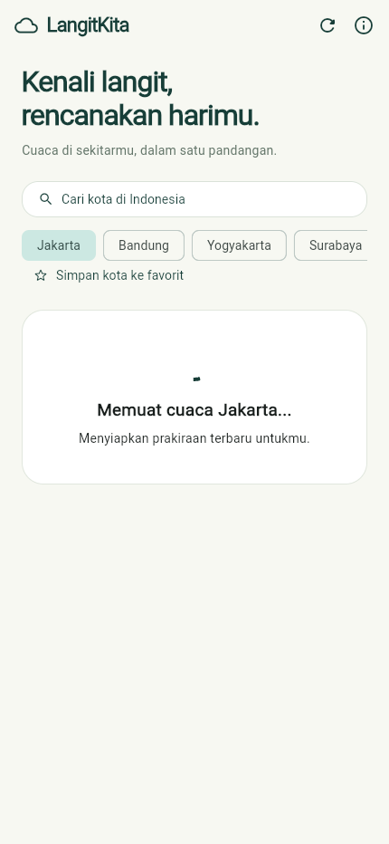
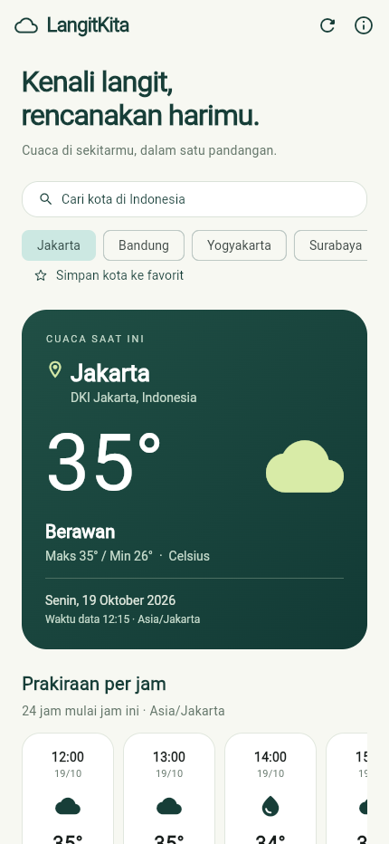
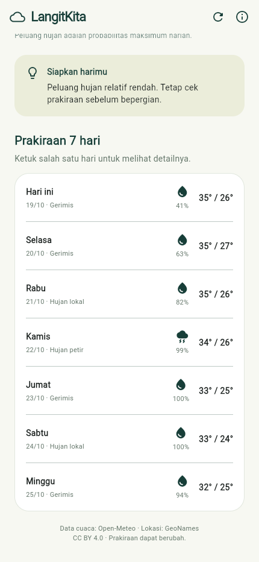
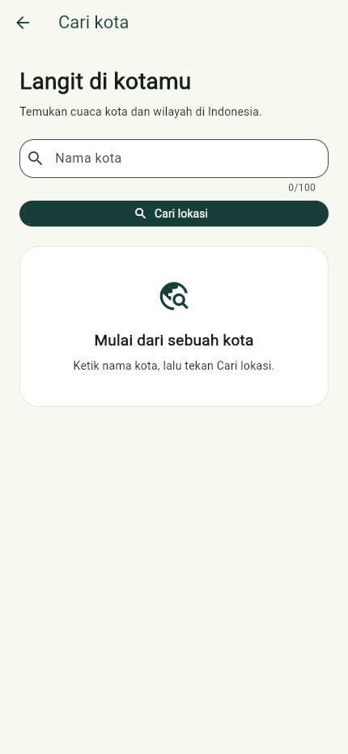
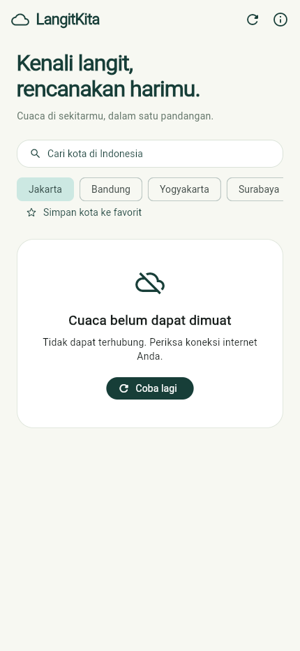
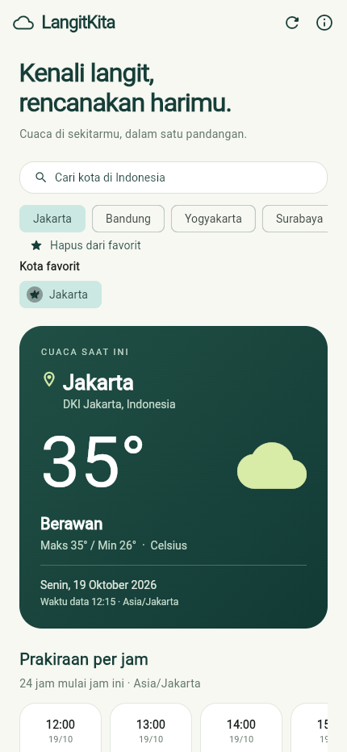
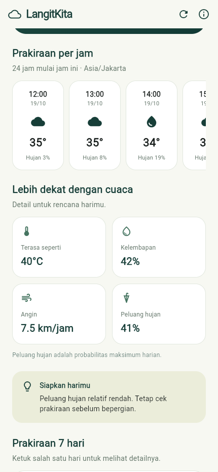
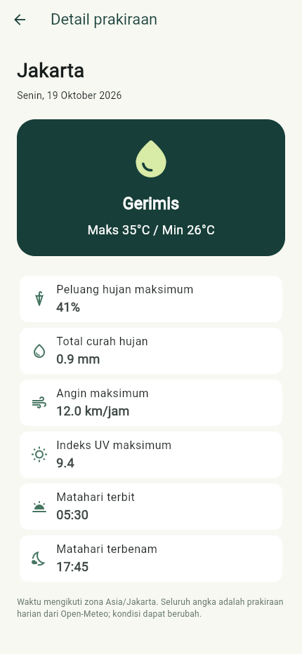

Aplikasi Mobile Berbasis API
Mata Kuliah Pemrograman Mobile
Praktikum Mobile Programming G
Disusun oleh:
Arya Kharisudin Irfani
NIM 240605110227
PROGRAM STUDI TEKNIK INFORMATIKA
[NAMA PERGURUAN TINGGI]
2026
Cover
BAB I PENDAHULUAN
1.1 Latar Belakang dan Gambaran Aplikasi
1.2 Fitur Aplikasi
BAB II PEMBAHASAN
2.1 Persiapan Project dan Package
2.2 Desain Antarmuka Pengguna
2.3 Implementasi Pengambilan dan Pengolahan Data API
2.4 Pengujian Aplikasi
BAB III PENUTUP
3.1 Kesimpulan
3.2 Saran
DAFTAR PUSTAKA
Status dokumen: laporan pengembangan dengan bukti pengujian lokal. Nama perguruan tinggi dan logo fakultas pada cover perlu dilengkapi. Source code telah diunggah ke repositori GitHub Public aryapulosari-design/UTS-Mobile-Praktikum dan README terverifikasi dapat dibaca tanpa login. Unggahan Google Drive belum dilakukan. Screenshot menggunakan Flutter web berukuran layar ponsel; bukan bukti pengujian pada perangkat Android fisik.
Informasi cuaca membantu masyarakat merencanakan kegiatan di luar ruangan, seperti perjalanan, perkuliahan, dan aktivitas sehari-hari. Data yang hanya menampilkan satu kondisi tanpa konteks waktu, lokasi, atau prakiraan beberapa hari dapat menyulitkan pengguna mengambil keputusan. Oleh karena itu, dikembangkan LangitKita, aplikasi mobile yang menyajikan kondisi cuaca dan prakiraan dalam antarmuka yang ringkas dan mudah dipahami.
LangitKita dibangun menggunakan Flutter dan Dart. Aplikasi mengambil data dinamis dari Open-Meteo melalui HTTP, memvalidasi respons server, mengonversi JSON menjadi objek model, dan menampilkan hasil melalui FutureBuilder. Pengguna dapat memilih kota yang tersedia atau mencari wilayah lain di Indonesia. Sasaran pengguna adalah mahasiswa dan masyarakat yang membutuhkan gambaran cuaca untuk kegiatan harian.
Tujuan pengembangan adalah menerapkan komunikasi API, asynchronous programming, pengelolaan status antarmuka, pemisahan struktur kode, serta pengujian yang sistematis sesuai ketentuan UTS. Teks soal tidak mencantumkan URL API tertentu dan pengguna mengonfirmasi tidak ada URL khusus, sehingga Open-Meteo dipilih sebagai sumber data. Jika kemudian terdapat ketetapan API dari dosen, sumber data perlu disesuaikan.
| Fitur | Fungsi dan manfaat |
|---|---|
| Cuaca saat ini | Menampilkan kota, region, suhu, kondisi cuaca, ikon, dan waktu data dalam zona lokasi. |
| Detail cuaca | Menyajikan suhu terasa, kelembapan, kecepatan angin, dan peluang hujan maksimum harian. |
| Prakiraan tujuh hari | Membantu perencanaan melalui informasi kondisi cuaca serta suhu maksimum dan minimum tiap hari. |
| Prakiraan per jam | Menampilkan 24 jam mulai jam berjalan, dengan suhu, peluang hujan, tanggal, dan ikon siang/malam. |
| Detail prakiraan harian | Ketuk salah satu hari untuk melihat UV maksimum, total curah hujan, angin maksimum, serta waktu matahari terbit dan terbenam. |
| Kota favorit | Menyimpan pilihan kota secara lokal agar dapat dipilih kembali setelah aplikasi ditutup. Data cuaca tetap diambil dari API. |
| Pilihan dan pencarian kota | Delapan kota cepat: Jakarta, Bandung, Yogyakarta, Surabaya, Malang, Kediri, Denpasar, dan Makassar. Pilihan Jawa Timur mencakup Surabaya, Malang, serta Kediri. Daftar dapat digeser ke samping. Kota lain dapat dicari berdasarkan nama dan koordinat hasil API. |
| Refresh dan coba ulang | Memperbarui informasi melalui tombol atau tarik layar, serta memulihkan tampilan setelah request gagal. |
| Status antarmuka | Memberikan informasi loading, berhasil, hasil kosong, atau error agar pengguna memahami keadaan aplikasi. |
Struktur dasar project Flutter dapat dibuat dengan perintah flutter create --project-name langit_kita langit_kita, yang menyediakan folder lib, test, dan runner platform. Dalam pengerjaan ini project Flutter yang sudah tersedia digunakan sebagai dasar dan disesuaikan; project tidak dibuat ulang pada folder yang berisi pekerjaan pengguna.
Package shared_preferences versi 2.5.6 ditambahkan untuk menyimpan pilihan kota favorit. API SharedPreferencesAsync digunakan agar operasi baca/tulis mengikuti penyimpanan platform secara asinkron. Pemilihannya sesuai kebutuhan preferensi sederhana; data cuaca tetap dimuat melalui HTTP.
Pengembangan dilakukan pada folder uts mobile praktikum, yang sebelumnya berisi demonstrasi GridView. Proyek diperbarui menjadi paket langit_kita dan aplikasi LangitKita. Kode utama, pengujian bawaan, judul antarmuka, identitas platform, serta lokasi berkas Kotlin disesuaikan. Flutter yang digunakan adalah versi 3.47.2 dengan Dart 3.13.2.
flutter pub get flutter devices flutter run -d chrome # Jika perangkat Android sudah terhubung: flutter run -d ID_PERANGKAT_ANDROID
Perintah dijalankan dari direktori proyek. Package http digunakan karena mendukung HTTP lintas platform dan menyediakan MockClient untuk pengujian. Material 3 digunakan untuk tema, formulir, tombol, dan navigasi. Font cupertino_icons disertakan untuk komponen adaptif Flutter. Parsing JSON menggunakan dart:convert; pengujian memakai flutter_test; kualitas kode diperiksa melalui flutter_lints.
| Bagian proyek | Tanggung jawab |
|---|---|
| lib/main.dart dan lib/app.dart | Entry point, MaterialApp, tema dan pengaturan halaman awal. |
| lib/models/ | Model City, Weather, DailyForecast, HourlyForecast dan validasi data. |
| lib/services/ | HTTP GET, timeout, status respons, parsing dan pesan kegagalan. |
| lib/screens/ | Beranda, FutureBuilder, pergantian kota, pencarian lokasi, dan detail harian. |
| lib/widgets/ dan lib/utils/ | Komponen tampilan yang digunakan ulang, label WMO dan format waktu. |
| test/ | Pengujian model, layanan API, dan interaksi widget. |
| docs/ dan tools/ | Laporan, screenshot, server preview serta pembuatan PDF. |
Android diberi izin android.permission.INTERNET dalam manifest utama agar koneksi tersedia pada build release. macOS menggunakan entitlement com.apple.security.network.client. Komunikasi dilakukan melalui HTTPS. Aplikasi tidak memerlukan API key maupun izin lokasi perangkat karena kota dipilih pengguna.
Fitur tambahan memanfaatkan atribut API yang telah diperiksa. Kartu prakiraan per jam dapat digeser horizontal. Daftar tujuh hari dapat diketuk untuk membuka halaman detail. Tombol favorit menyimpan atau menghapus kota; daftar favorit muncul saat berisi pilihan.
Antarmuka menggunakan latar terang, aksen hijau, dan kartu dengan sudut membulat. Informasi utama berupa nama kota dan suhu ditempatkan pada kartu utama. Detail cuaca disajikan dalam kartu metrik, sedangkan prakiraan harian berbentuk daftar agar mudah dibandingkan. Konten dibatasi lebarnya pada layar besar dan dapat digulir pada layar ponsel. Tombol pencarian dan pilihan kota berada di atas kartu cuaca.
Halaman pencarian terdiri atas kolom nama kota, validasi minimal tiga karakter, tombol Cari lokasi, dan daftar hasil. Pemilihan hasil mengembalikan objek City ke beranda. Komponen StatusPanel menampilkan keadaan loading, hasil kosong, dan error dengan gaya yang konsisten.
Gambar berikut diambil dari Flutter web yang dijalankan pada Chrome dengan viewport 430 × 932 piksel. Tampilan sukses memakai API asli. Kondisi loading dan error dibuat melalui intersepsi jaringan browser untuk menguji respons antarmuka.




Pada daftar prakiraan, angka persentase di bawah ikon menunjukkan peluang hujan maksimum harian. Suhu ditulis dalam Celsius; kecepatan angin dalam km/jam. Waktu data mengikuti zona lokasi dari API dan tidak dikonversi ke zona perangkat.

Kondisi error tidak digantikan dengan nilai cuaca palsu. Pesan yang ditampilkan membedakan koneksi terputus, timeout, kegagalan HTTP, batas permintaan, serta data yang tidak dapat diproses.
Gambar tambahan untuk fitur yang dikembangkan ditampilkan berikut. Seluruh gambar berasal dari aplikasi yang dijalankan, dengan data cuaca asli dan profil browser pengujian tersendiri.



Open-Meteo dipilih karena menyediakan data cuaca dalam JSON, koordinat lintas lokasi, dokumentasi atribut yang jelas, dan akses nonkomersial tanpa API key. Sebelum implementasi, endpoint cuaca diperiksa langsung pada 19 Oktober 2026 dan mengembalikan HTTP 200. Respons memuat objek current, daily, timezone, serta metadata unit. Endpoint pencarian Bandung juga diperiksa dan mengembalikan nama, region, serta koordinat lokasi.
GET https://api.open-meteo.com/v1/forecast
latitude=-6.2
longitude=106.8167
current=temperature_2m,relative_humidity_2m,
apparent_temperature,is_day,weather_code,wind_speed_10m
daily=weather_code,temperature_2m_max,
temperature_2m_min,precipitation_probability_max,
sunrise,sunset,uv_index_max,precipitation_sum,wind_speed_10m_max
hourly=temperature_2m,precipitation_probability,weather_code,is_day
forecast_hours=24
timezone=auto
temperature_unit=celsius
wind_speed_unit=kmh
forecast_days=7
GET https://geocoding-api.open-meteo.com/v1/search
name=Bandung&count=10&language=id&format=json&countryCode=ID
Atribut dipilih sesuai kebutuhan antarmuka. Suhu, kelembapan, angin, kode cuaca, dan prakiraan ditampilkan karena membantu pengguna merencanakan aktivitas. Metadata seperti waktu pemrosesan server dan elevasi tidak ditampilkan. Array prakiraan dipasangkan berdasarkan indeks yang sama.
{
"timezone": "Asia/Jakarta",
"current": {
"time": "2026-10-19T09:15",
"temperature_2m": 31.5,
"relative_humidity_2m": 59,
"apparent_temperature": 37.5,
"is_day": 1, "weather_code": 3, "wind_speed_10m": 0.9
},
"daily": {
"time": ["2026-10-19", "2026-10-20"],
"weather_code": [53, 51],
"temperature_2m_max": [35.3, 34.9],
"temperature_2m_min": [25.9, 26.5],
"precipitation_probability_max": [59, 61]
}
}
Contoh JSON hanya menunjukkan sebagian atribut current/daily dan dipersingkat menjadi dua hari. Respons lengkap juga mengandung hourly untuk 24 jam serta sunrise, sunset, uv_index_max, precipitation_sum, dan wind_speed_10m_max pada daily. Endpoint lengkap telah diperiksa dengan lokasi Malang dan mengembalikan 24 data per jam serta tujuh hari. Data contoh tidak digunakan sebagai data operasional.
WeatherService membangun URI HTTPS dengan query parameter, lalu melakukan GET menggunakan HTTP client. Fungsi asinkron menghasilkan Future dan membatasi waktu tunggu menjadi 15 detik. Potongan kode berikut berasal dari inti metode pengambilan respons; pemeriksaan status diringkas agar fokus pada alurnya.
final response = await _client.get(uri).timeout(timeout);
if (response.statusCode != 200) {
throw WeatherException(
'Layanan belum tersedia (HTTP ${response.statusCode}). Coba lagi.',
);
}
final decoded = jsonDecode(utf8.decode(response.bodyBytes));
if (decoded is! Map<String, dynamic> || decoded['error'] == true) {
throw const FormatException('Respons API tidak valid.');
}
return decoded;
Implementasi lengkap memberi pesan khusus untuk HTTP 429. TimeoutException ditangani sebagai koneksi terlalu lama dan ClientException sebagai koneksi gagal. JSON yang rusak, struktur berubah, atau data model tidak lengkap diterjemahkan menjadi WeatherException dengan pesan yang dapat dibaca pengguna.
Model Weather memuat waktu, zona waktu, suhu, kelembapan, angin, kode cuaca, serta daftar DailyForecast. City memuat nama, region, dan koordinat. Factory fromJson bertanggung jawab mengubah data mentah menjadi objek yang aman dipakai UI. Angka diterima sebagai num kemudian dikonversi ke double sehingga respons integer maupun desimal dapat diproses.
double _number(dynamic value) {
if (value is! num || !value.isFinite) {
throw const FormatException(
'Nilai cuaca tidak tersedia atau tidak valid.',
);
}
return value.toDouble();
}
// Di Weather.fromJson:
temperature: _number(current['temperature_2m']),
feelsLike: _number(current['apparent_temperature']),
humidity: _number(current['relative_humidity_2m']).toInt(),
Seluruh array harian harus memiliki panjang sama dan tidak kosong. Tanggal diparsing menggunakan DateTime.tryParse. Jika salah satu nilai wajib tidak tersedia, model menolak respons dan UI menampilkan error, sehingga angka kosong tidak salah ditafsirkan sebagai nol.
Future disimpan dalam state dan dibuat pada initState. Penggantian kota atau refresh membuat Future baru melalui setState. Penempatan ini mencegah request HTTP baru setiap kali build berjalan. Potongan berikut menunjukkan alur yang digunakan pada beranda.
@override
void initState() {
super.initState();
_service = widget.service ?? WeatherService();
_weather = _service.fetchWeather(_city);
}
// Saat pengguna meminta data baru:
setState(() {
if (city != null) _city = city;
_weather = _service.fetchWeather(_city);
});
FutureBuilder memantau Future tersebut. Saat ConnectionState belum done, aplikasi menampilkan loading. Jika snapshot.hasError bernilai true, pesan dan tombol coba lagi ditampilkan. Saat data tersedia dan lolos validasi, WeatherContent menyajikan kartu cuaca dan prakiraan. Beranda juga memiliki jalur penanganan data kosong. Skema kode berikut merangkum cabang utama, sedangkan implementasi lengkap terdapat dalam weather_screen.dart.
FutureBuilder<Weather>(
future: _weather,
builder: (context, snapshot) {
if (snapshot.connectionState != ConnectionState.done) {
return StatusPanel(/* loading */);
}
if (snapshot.hasError) {
return StatusPanel(/* pesan dan tombol coba lagi */);
}
// Periksa snapshot.data, lalu tampilkan WeatherContent.
},
)
Pencarian menggunakan FutureBuilder terpisah untuk daftar City. Hasil kosong ditampilkan secara eksplisit. Navigator mengirim objek lokasi terpilih kembali ke beranda, kemudian koordinatnya dipakai untuk mengambil cuaca.
FavoritesStore menggunakan SharedPreferencesAsync dari package shared_preferences 2.5.6. Setiap kota disimpan sebagai JSON berisi nama, region, latitude, dan longitude dalam daftar string dengan kunci khusus aplikasi. Koordinat digunakan sebagai identitas untuk menghindari duplikasi. Entri rusak diabaikan per entri. Status berhasil menyimpan hanya ditampilkan setelah operasi selesai; kegagalan diberi pesan dan data sebelumnya dipertahankan.
await _prefs.setStringList( key, cities.map((city) => jsonEncode(city.toJson())).toList(), ); final values = await _prefs.getStringList(key) ?? [];
Potongan merangkum proses penyimpanan dan pembacaan; implementasi lengkap juga melakukan deduplikasi. Data cuaca tetap diminta dari API, sehingga penyimpanan favorit tidak menjadikan aplikasi cuaca offline.
Pengujian dilakukan menggunakan Flutter Test dengan MockClient. Pendekatan ini membuat skenario HTTP 429, HTTP 500, JSON rusak, offline, timeout, serta hasil pencarian kosong dapat direproduksi tanpa bergantung pada kondisi server. Pemeriksaan API asli dilakukan terpisah. Perintah yang digunakan:
flutter analyze flutter test --reporter expanded flutter build web --release
| No. | Kelompok / skenario | Hasil terverifikasi |
|---|---|---|
| 1 | Analisis statis | Analisis akhir lulus tanpa masalah. |
| 2 | Model dan helper: 7 tes | Lulus: parsing, tipe angka, data rusak, koordinat, serta label tanggal/WMO. |
| 3 | Layanan API: 13 tes | Lulus: parameter request, HTTP gagal, JSON rusak, timeout, offline, pencarian. |
| 4 | Widget: 10 tes | Lulus: loading/sukses/error, pilihan dan pencarian kota, layar 320 piksel, detail harian, gulir per jam, serta favorit simpan/pulih/hapus/gagal. |
| 5 | Total tes | 34 tes lulus pada 19 Oktober 2026. |
| 6 | API asli | Forecast HTTP 200; Geocoding berhasil mengembalikan lokasi Bandung. |
| 7 | Build web | Berhasil menghasilkan build/web. |
| 8 | Build APK Android release | Berhasil menghasilkan build/app/outputs/flutter-apk/app-release.apk. Instalasi pada perangkat Android belum diuji. |
| 9 | Penyimpanan favorit: 4 tes | Lulus: pemulihan antar-instance, entri rusak, deduplikasi, penghapusan, dan kegagalan penyimpanan. Browser juga memverifikasi favorit setelah reload. |
Pengujian awal menemukan overflow judul pada layar kecil dan tipe map fixture yang terlalu ketat untuk memasukkan nilai null. Judul diperbaiki memakai Flexible serta ellipsis, dan tipe fixture diperbaiki menjadi Map<String, dynamic>. Setelah perbaikan, seluruh 34 tes lulus. Fixture hanya digunakan dalam pengujian; data aplikasi tetap berasal dari API.
| Skenario | Hasil yang diharapkan |
|---|---|
| Buka aplikasi dengan internet | Loading berubah menjadi cuaca Jakarta dan prakiraan. |
| Pilih kota cepat dan cari Malang | Cuaca mengikuti lokasi yang dipilih. |
| Masukkan nama dua karakter | Form menampilkan pesan minimal tiga karakter. |
| Putus koneksi lalu refresh | Pesan error dan tombol coba lagi muncul. |
| Aktifkan koneksi lalu coba lagi | Data baru dimuat dan antarmuka kembali berhasil. |
| Gulir prakiraan dan ubah orientasi | Konten tetap terbaca dan tidak terpotong. |
Belum terdapat perangkat Android terhubung saat pemeriksaan awal. Tabel ini adalah rencana pengujian lanjutan, bukan klaim hasil uji pada ponsel. Screenshot browser digunakan sebagai bukti UI sementara; pengujian instalasi APK perlu dilakukan sebelum pengumpulan.
LangitKita telah diimplementasikan sebagai aplikasi Flutter yang mengambil data cuaca dinamis dari Open-Meteo. Data diterima melalui HTTP, diperiksa statusnya, diparsing menjadi model Dart, dan disajikan menggunakan FutureBuilder dengan kondisi loading, sukses, error, serta data kosong. Pemisahan model, layanan, halaman, dan widget membuat kode lebih mudah ditelusuri.
Seluruh 34 tes otomatis lulus setelah perbaikan, dan build web serta APK Android release berhasil dihasilkan. Pemeriksaan endpoint asli menunjukkan API dapat memberikan data cuaca dan lokasi. Hasil tersebut menunjukkan fungsi inti bekerja pada lingkungan pengujian yang dijalankan. Pengujian Android fisik, kelengkapan identitas institusi pada cover, serta unggahan Google Drive tetap perlu diselesaikan sebelum tugas dikumpulkan. Source code telah dipublikasikan pada repositori GitHub Public.
Pengembangan berikutnya dapat menambahkan cache untuk menampilkan data terakhir saat offline dengan penanda waktu yang jelas, serta penggunaan lokasi perangkat berdasarkan persetujuan pengguna. Pengujian pada lebih banyak ukuran layar, perangkat Android, dan jaringan lambat juga diperlukan. Apabila aplikasi digunakan secara komersial, akses API perlu mengikuti layanan dan ketentuan komersial penyedia.
Sebelum pengumpulan, nama perguruan tinggi dan logo fakultas perlu dilengkapi pada cover. Source code akhir telah tersedia pada repositori GitHub Public aryapulosari-design/UTS-Mobile-Praktikum. Laporan PDF perlu diunggah ke Google Drive dengan izin Anyone with the link sebagai Viewer. Kedua tautan perlu diuji tanpa login melalui jendela Incognito sebelum batas pengumpulan 26 Oktober 2026 pukul 23.59 WIB.
Flutter. Dokumentasi Flutter. https://docs.flutter.dev/. Diakses 19 Oktober 2026.
Flutter. FutureBuilder class. https://api.flutter.dev/flutter/widgets/FutureBuilder-class.html.
Dart. Asynchronous programming: futures, async, await. https://dart.dev/libraries/async/async-await.
Dart Team. Package http. https://pub.dev/packages/http. Diakses 19 Oktober 2026.
Flutter. Package shared_preferences. https://pub.dev/packages/shared_preferences. Diakses 19 Oktober 2026.
Flutter. Testing Flutter apps. https://docs.flutter.dev/testing/overview.
Open-Meteo. Weather Forecast API. https://open-meteo.com/en/docs. Diakses 19 Oktober 2026.
Open-Meteo. Geocoding API. https://open-meteo.com/en/docs/geocoding-api. Diakses 19 Oktober 2026.
GeoNames. Geographical database. https://www.geonames.org/.
Creative Commons. Attribution 4.0 International. https://creativecommons.org/licenses/by/4.0/.